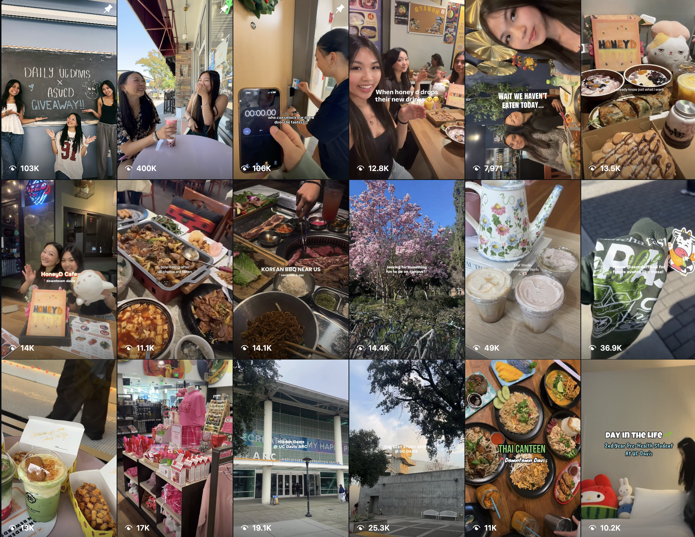

Campus news was scattered across group chats. I built one page for it — then sold local businesses a way to reach its audience.

[Why it worked, in one or two sentences: the hook, the timing, and what made students share it.]
Before Daily UC Davis, the honest answer was nowhere. So I built the place.
Other big campuses have a page every student follows. UC Davis didn’t. News, events, and food recommendations were scattered across group chats, club pages, and word of mouth. If you weren’t in the right chat, you missed it.
Local businesses had the same problem from the other side. They wanted students, but flyers got ignored and there was no trusted channel to reach them.
I named it, designed the wordmark, palette, and post templates, and set a format with three pillars: campus news as the reason to check in daily, food & places as the most-saved posts and where businesses fit in, and student life as relatable posts that travel beyond followers.
I did all of it myself, with no team and no budget. I found the stories, filmed, edited, wrote the captions, and posted every day.
Because the format was consistent, it was easy to share. I watched the insights and kept making whatever reached non-followers. In the first 30 days it hit 1.2M views, and 3.3M by day 90, all organic.
Students started sending in tips, events, and questions without being asked. That was the sign it had become the campus hub, not just another account.
With a proven audience, I pitched local shops, campus orgs, and national brands. I handled outreach, pricing, production, and delivery, and built every collab into the existing format so it didn’t read as an ad.
The ASUCD giveaway shows how it worked: 3,145 entries, 103K views, and 588 shares from one post designed to make people act, not just scroll.
Across Daily UC Davis and DavisWithMaya, I planned, filmed, and edited each one myself. Tap any video to watch the original post.